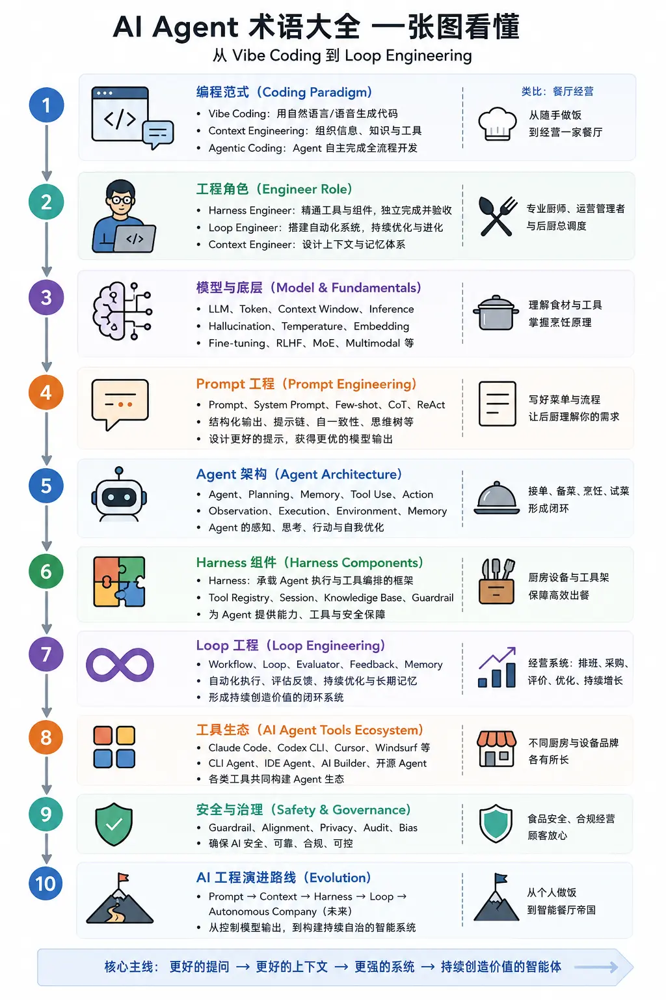

Terminología de AI Agent
Con el rápido desarrollo de los grandes modelos de lenguaje (LLM) y la tecnología de agentes (Agent), el paradigma de programación está experimentando una profunda transformación. Vibe Coding, Agentic Coding, Harness Engineer, Loop Engineer... surgen sin cesar nuevos conceptos y términos. A continuación, veamos cuáles son estos nuevos términos y qué significan.
AI AgentCompuesto por Artificial Intelligence (inteligencia artificial) y Agent (agente).

1. Paradigma de programación (Coding Paradigm)
| Término |
Chino |
Significado principal |
Ejemplo (operación de restaurante) |
| Vibe Coding |
Programación por vibra (Vibe Coding) |
Usar lenguaje natural o voz para describir requisitos y que la IA genere código |
En casa, preparar arroz frito al gusto, echando lo que quieras |
| Context Engineering |
Ingeniería de contexto |
Mejorar el rendimiento del modelo organizando contexto, conocimiento, memoria y herramientas |
Preparar los ingredientes, el menú y el entorno de la cocina con antelación |
| Agentic Coding |
Programación con agentes (Agentic Coding) |
El agente completa tareas de programación de forma autónoma (diseño → implementación → pruebas → aceptación) |
Gestionar un restaurante formal, desde el menú y los ingredientes hasta todo el proceso de servicio |
| AI Native Development |
Desarrollo nativo de IA |
Por defecto, la IA participa en todo el proceso de diseño, desarrollo y pruebas |
Operar directamente un restaurante inteligente |
2. Roles de ingeniería (Engineer Role)
| Término |
Chino |
Significado principal |
Ejemplo (operación de restaurante) |
| Harness Engineer |
Ingeniero de Harness |
Sabe invocar varios componentes Harness, trabaja por su cuenta y realiza su propia verificación |
Chef profesional que domina todo tipo de utensilios y técnicas; al terminar, prueba y controla la calidad |
| Loop Engineer |
Ingeniero de bucles (Loop Engineer) |
Construye sistemas de orquestación automatizada para una evolución autónoma |
Sistema de gestión de operaciones de restaurante que coordina horarios, compras, ritmo de servicio y costos |
| Context Engineer |
Ingeniero de contexto |
Responsable de diseñar el contexto, las fuentes de conocimiento y los sistemas de memoria |
Supervisor general de cocina |
| AI Product Engineer |
Ingeniero de productos de IA |
Responsable del diseño del circuito cerrado entre las capacidades de IA y el negocio |
Dueño del restaurante y responsable de operaciones |
| Agent Operator |
Ingeniero de operaciones de agentes |
Supervisar y optimizar continuamente el rendimiento de ejecución del agente |
El gerente optimiza continuamente los datos de negocio |
3. Modelos y fundamentos (Model & Fundamentals)
| Término |
Chino |
Significado principal |
Notas |
| LLM（Large Language Model） |
Gran modelo de lenguaje (LLM) |
Modelo de predicción de lenguaje entrenado con enormes cantidades de texto |
GPT, Claude y Gemini son LLM |
| GPT |
Transformer generativo preentrenado (GPT) |
Paradigma de arquitectura de modelos de OpenAI |
Generative Pre-trained Transformer |
| Token |
Token |
Unidad mínima de texto que procesa el modelo (aproximadamente ¾ de una palabra en inglés) |
Unidad de medida para facturación y longitud de contexto |
| Context Window |
Ventana de contexto |
Número máximo de tokens que el modelo puede "ver" de una sola vez |
Cuanto más grande es la ventana, más recuerda |
| Inference |
Inferencia |
Proceso por el cual el modelo genera una salida |
Se diferencia del entrenamiento |
| Hallucination |
Alucinación |
El modelo inventa con total seriedad información que no existe |
Genera contenido que no es consistente con los hechos, el contexto o el objetivo |
| Temperature |
Temperatura |
Controla la distribución de probabilidad del muestreo; los valores altos son más diversos y los bajos, más estables |
Para escribir código, se recomienda ajustarla a un valor bajo |
| Top-p / Top-k |
Parámetro de muestreo |
Controla el rango de muestreo de las palabras candidatas |
Afecta la diversidad de la salida |
| Embedding |
Incrustación de vectores (Vector Embedding) |
Convierte texto/imágenes en vectores numéricos para calcular similitudes |
Base de RAG |
| Fine-tuning |
Ajuste fino (Fine-tuning) |
Continuar el entrenamiento de un modelo general con datos específicos |
Hace que el modelo comprenda mejor un dominio específico |
| RLHF |
Aprendizaje por refuerzo basado en retroalimentación humana (RLHF) |
Alinea el comportamiento del modelo con las preferencias humanas |
Hace que la IA sea "obediente" |
| MoE（Mixture of Experts） |
Mezcla de expertos (Mixture of Experts) |
Activa solo una parte de los parámetros en cada paso para mejorar la eficiencia |
Ejecuta modelos más potentes con menos potencia computacional |
| Multimodal |
Multimodal |
Procesa texto, imágenes, audio y video de forma simultánea |
GPT-4o y Gemini ya lo son |
| Transformer |
Arquitectura Transformer |
Estructura de red neuronal subyacente de los LLM modernos |
El mecanismo de atención es el núcleo |
| KV Cache |
Caché de clave-valor (KV Cache) |
Almacena en caché los resultados del cálculo del contexto para acelerar la inferencia |
Evita tener que consultar la receta repetidas veces |
| Latency |
Latencia |
Tiempo que tarda el modelo en responder |
Afecta la experiencia del usuario |
| Throughput |
Rendimiento (Throughput) |
Número de tareas que se pueden procesar por unidad de tiempo |
Afecta la capacidad de concurrencia |
4. Ingeniería de prompts (Prompt Engineering)
| Término |
Chino |
Significado principal |
| Prompt |
Prompt |
Instrucción de entrada que se le da al modelo |
| System Prompt |
Prompt del sistema (System Prompt) |
Instrucciones de base que definen el rol, los límites y el comportamiento del agente |
| Prompt Engineering |
Ingeniería de prompts |
Técnica para diseñar y optimizar prompts y obtener mejores salidas |
| Zero-shot |
Zero-shot (sin ejemplos) |
Pedir al modelo que complete la tarea directamente, sin dar ejemplos |
| Few-shot |
Few-shot (con pocos ejemplos) |
Dar algunos ejemplos para guiar al modelo a generar salidas con el formato/estilo deseado |
| Chain of Thought（CoT） |
Cadena de pensamiento (Chain of Thought) |
Guía al modelo para generar un proceso de razonamiento intermedio, mejorando su capacidad de razonamiento complejo |
| ReAct |
Razonamiento + Acción (Reasoning + Acting) |
Reasoning + Acting se alternan: pensar y actuar a la vez. Es el paradigma central del agente |
| Role Prompting |
Juego de roles |
Hacer que el modelo interprete un rol (por ejemplo, "eres un arquitecto senior") |
| Structured Output |
Salida estructurada |
Obligar al modelo a generar salidas en formatos como JSON/XML |
| Prompt Chaining |
Cadena de prompts (Prompt Chaining) |
Múltiples prompts encadenados para completar tareas complejas |
| Self-Consistency |
Autoconsistencia (Self-Consistency) |
Genera varios resultados de razonamiento y luego elige mediante votación |
| Tree of Thoughts（ToT） |
Árbol de pensamiento (Tree of Thoughts) |
Explora varias rutas de razonamiento en paralelo |
5. Arquitectura de agente (Agent Architecture)
| Término |
Chino |
Significado principal |
Ejemplo (operación de restaurante) |
| Agent |
Agente |
Programa de IA capaz de percibir, decidir y ejecutar tareas de forma autónoma |
Chef principal |
| Multi-Agent |
Multiagente (Multi-Agent) |
Varios agentes colaboran con división del trabajo |
Un equipo de chefs colabora para sacar los platos |
| Subagent |
Subagente |
Subagente especializado derivado del agente principal |
Chef dedicado (por ejemplo, cortes, platos fríos, postres) |
| Tool Use / Function Calling |
Llamada de herramientas / llamada de funciones |
El agente invoca herramientas/API externas para ejecutar acciones |
Usar utensilios de cocina como cuchillos, fogones y hornos |
| Planning |
Planificación |
El agente descompone los objetivos y define los pasos de ejecución |
Elaborar el plan de preparación de ingredientes y de servicio de platos |
| Reflection |
Reflexión |
El agente revisa sus propias acciones y mejora |
Probar los platos y ajustar el sabor según la retroalimentación |
| Memory |
Memoria |
Información a largo plazo guardada y reutilizada entre sesiones (corto/largo plazo) |
Acumulación de recetario y datos operativos |
| Agent Loop |
Bucle del agente (Agent Loop) |
Mecanismo iterativo: pensar → actuar → observar → volver a pensar |
Ciclo: preparar ingredientes → cocinar → probar → servir |
| Environment |
Entorno |
El mundo real en el que el agente percibe y ejecuta acciones |
El entorno de la cocina |
| Observation |
Observación |
Obtener información de retroalimentación después de la ejecución |
Retroalimentación de prueba de platos |
| Execution |
Ejecutar |
Convertir la planificación en acciones reales |
Comenzar a cocinar |
| Long-term Memory |
Memoria a largo plazo |
Conservar experiencias y conocimientos a largo plazo |
Gestionar la base de datos |
6. Componentes Harness (módulos de capacidades de AI Agent)
| Término |
Chino |
Significado principal |
Ejemplo (Gestión de restaurante) |
| Harness |
Arnés / Marco de control |
Marco de ejecución que soporta la ejecución del Agente, la gestión del contexto y la orquestación de herramientas |
Todo el sistema de cocina (la cocina en sí) |
| Skills |
Habilidad |
Módulo de capacidad especializada invocable por el Agente |
Diversas técnicas culinarias (saltear, freír, cocinar, etc.) |
| Context |
Contexto |
Alcance de información disponible para la tarea actual |
Pedido actual, inventario de ingredientes y requisitos del cliente |
| MCP（Model Context Protocol） |
Protocolo de Contexto del Modelo |
Protocolo estándar para que el Agente se conecte a herramientas/fuentes de datos externas |
Interfaz estándar para conectar con proveedores de ingredientes y plataformas de comida para llevar |
| Permission |
Control de permisos |
Mecanismo de seguridad que controla lo que el Agente puede/no puede hacer |
Permisos de operación en cocina y aprobación de compras |
| RAG（Retrieval-Augmented Generation） |
Generación Aumentada por Recuperación (RAG) |
Primero buscar en la base de conocimientos, luego dejar que el modelo genere, reduciendo alucinaciones |
Consultar el libro de recetas para ver el método estándar antes de cocinar |
| Tool Registry |
Centro de registro de herramientas |
Gestionar de forma unificada las herramientas invocables por el Agente |
Estante de utensilios de cocina |
| Session |
Sesión |
Ciclo de vida de una tarea |
Un proceso de operación comercial |
| Knowledge Base |
Base de conocimientos |
Conjunto de conocimientos externos disponible para consulta del Agente |
Biblioteca de recetas del restaurante |
7. Herramientas de Loop (orquestación automatizada y evolución autónoma)
| Término |
Chino |
Significado principal |
Ejemplo (Gestión de restaurante) |
| /loop |
Instrucción de bucle |
Hacer que el Agente se ejecute continuamente en bucle |
Línea de producción continua de servicio de platos |
| /goal |
Instrucción de objetivo |
Establecer objetivos que impulsen al Agente a lograrlos autónomamente |
Objetivo de operación del día |
| Cron |
Tarea programada |
Activación automática según un plan de tiempo |
Horario de operación y programación de preparación de alimentos |
| Worktree |
Árbol de trabajo |
Área de trabajo paralelo con múltiples ramas de Git |
Múltiples fogones encendidos simultáneamente sin interferirse entre sí |
| Workflow |
Flujo de trabajo |
Proceso de automatización predefinido de varios pasos |
SOP estándar de servicio de platos |
| Scheduler |
Planificador |
Coordinar el orden de ejecución de múltiples tareas |
Sistema de programación de turnos de cocina |
| Checkpoint |
Punto de control |
Guardar el estado de ejecución para su recuperación |
Continuar trabajando después de una pausa en el negocio |
| Human-in-the-loop |
Humano en el circuito |
Permitir intervención humana en pasos clave |
Confirmación final del chef principal para servir el plato |
8. Ecosistema de herramientas (Tool Ecosystem)
| Herramienta |
Tipo |
Descripción |
| Claude Code（cc） |
AI Agent / CLI |
Agente de terminal oficial de Anthropic, representante típico de Harness |
| Codex CLI |
AI Agent / CLI |
Agente de codificación de línea de comandos oficial de OpenAI |
| Cursor |
AI IDE |
Editor de código con IA integrada, principal herramienta de Vibe Coding |
| Windsurf |
AI IDE |
IDE de IA creado por Codeium |
| GitHub Copilot |
Asistente de programación con IA |
El plugin de programación con IA más popularizado, enfocado en autocompletado asistido |
| Cline / Roo Code |
Plugin de Agente de código abierto |
Agente de codificación autónomo en VS Code |
| Aider |
Agente CLI de código abierto |
Herramienta de programación en pareja con IA en la línea de comandos |
| Devin |
Ingeniero de software con IA |
El "primer programador de IA" lanzado por Cognition, enfocado en autonomía total |
| Continue |
Plugin de IA de código abierto |
Asistente de código con modelo personalizable |
| Qoder |
AI IDE |
Entorno de desarrollo inteligente nacional orientado a escenarios de programación con IA, enfatizando Agente, comprensión de proyectos y generación de código |
| Trae |
AI IDE |
Nueva generación de herramienta de programación con IA lanzada por ByteDance, compatible con desarrollo conversacional y colaboración a nivel de ingeniería |
| ZCode |
Asistente de programación con IA |
Producto de programación inteligente lanzado por Z.ai, compatible con generación, comprensión, refactorización de código y colaboración en ingeniería |
| OpenHands |
Agente de código abierto |
Desarrollo de software autónomo, orientado a ejecución completa de ingeniería |
| Bolt |
AI Builder |
Generación rápida de aplicaciones, enfocado en materialización del producto |
| Lovable |
AI Builder |
Generación de Web mediante lenguaje natural, enfatizando la entrega del producto |
9. Evaluación y seguridad (Evaluation & Safety)
| Término |
Chino |
Significado principal |
| Eval |
Evaluación |
Medir las capacidades del modelo/Agente con un conjunto de pruebas |
| Alignment |
Alineación |
Hacer que el comportamiento de la IA se ajuste a las intenciones y valores humanos |
| Guardrail |
Barandilla de seguridad |
Mecanismo de seguridad que limita el alcance de salida de la IA |
| Red Teaming |
Prueba de equipo rojo (Red Team) |
Atacar/inducir activamente a la IA para descubrir vulnerabilidades |
| Prompt Injection |
Inyección de prompts |
Entrada maliciosa que secuestra el comportamiento de la IA (como "ignora las instrucciones anteriores") |
| Context Poisoning |
Contaminación del contexto |
Inyectar información maliciosa en el contexto para engañar al Agente |
| Sandbox |
Sandbox (Aislamiento) |
Entorno de ejecución aislado para evitar que la IA dañe el sistema por operaciones erróneas |
10. Ruta de evolución de la ingeniería de IA (Evolution)
Las capacidades de la ingeniería de IA están ascendiendo gradualmente: desde controlar la salida del modelo, hasta controlar el contexto, luego controlar el sistema, y finalmente evolucionar hacia sistemas autónomos continuos.
| Etapa |
Punto de atención |
Capacidad clave |
| Prompt Engineering |
Cómo preguntar |
Diseño de prompts |
| Context Engineering |
Qué información dar |
Organización del contexto |
| Harness Engineering |
Cómo organizar capacidades |
Orquestación de herramientas |
| Loop Engineering |
Cómo crear resultados de forma continua |
Ejecución automática y retroalimentación |
Otras extensiones
Haz clic para compartir notas
<p style="font-size:14px;">¡Las notas deben ser una extensión del contenido de este artículo!</p><br> <p style="font-size:12px;"><a href="../tougao.html" target="_blank">Envía tus artículos, haz clic aquí</a></p> <p style="font-size:14px;"><a href="../w3cnote/runoob-user-test-intro.html" target="_blank">Cómo obtener el código de invitación de registro</a></p> <h3 class="text-muted"><i class="fa fa-info-circle" aria-hidden="true"></i> Debes <a href=";.html" class="runoob-pop">iniciar sesión</a> antes de compartir notas.</h3> <p><a href="../w3cnote/runoob-user-test-intro.html" target="_blank">Cómo obtener el código de invitación de registro</a></p>